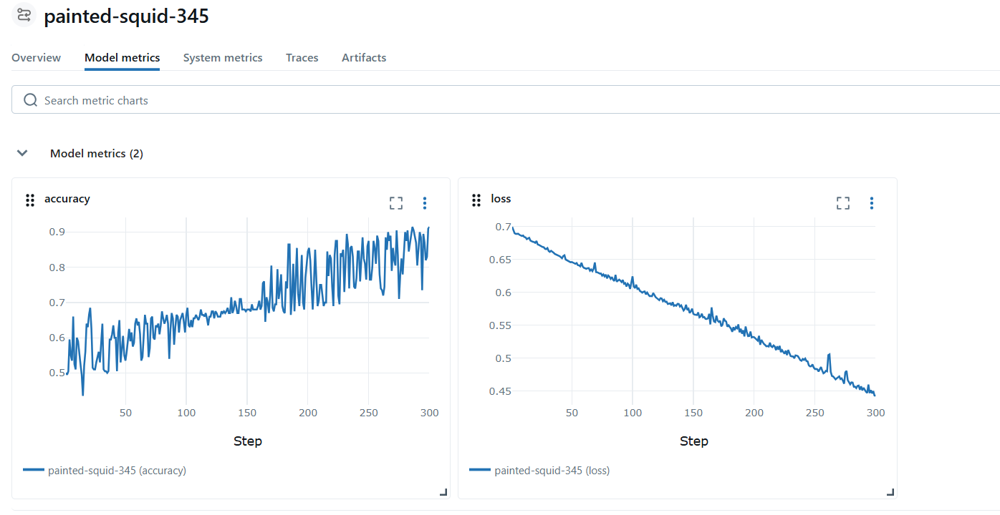
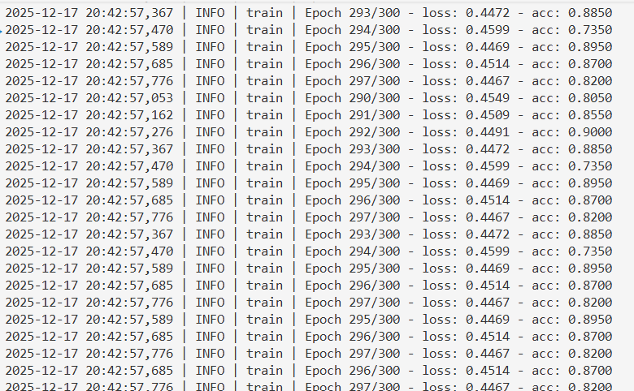

프로젝트 2
MLflow를 활용한 머신러닝 실험 관리


아키텍처
- UCR 시계열 데이터셋(GunPoint)을 aeon 라이브러리로 로드
- 입력 데이터 형태를 Conv1d 규격에 맞게 (Batch, Channel, Time)으로 확인 및 유지
- 문자열 기반 클래스 라벨을 정수 인코딩(0-based)으로 변환하여 분류 학습에 사용
- NumPy 배열을 PyTorch Tensor(float32 / long)로 명시적으로 변환
- 학습/평가 과정에서 사용된 파라미터와 지표를 MLflow로 추적
학습과정 예시
class Conv1DClassifier(nn.Module):
def __init__(self, in_channels: int = 1, num_classes: int = 2):
super().__init__()
self.encoder = nn.Sequential(
nn.Conv1d(in_channels, 16, kernel_size=5, padding=2),
nn.ReLU(),
nn.MaxPool1d(2),
nn.Conv1d(16, 32, kernel_size=3, padding=1),
nn.ReLU(),
nn.AdaptiveAvgPool1d(1),
)
self.classifier = nn.Sequential(
nn.Flatten(),
nn.Linear(32, num_classes),
)
def forward(self, x: torch.Tensor) -> torch.Tensor:
"""Forward pass.
x: shape (batch, channels, length)
"""
x = self.encoder(x)
x = self.classifier(x)
return x
criterion = nn.CrossEntropyLoss()
optimizer = optim.Adam(model.parameters(), lr=args.lr)
mlflow.log_param("model", type(model).__name__)
mlflow.log_param("in_channels", in_channels)
mlflow.log_param("num_classes", num_classes)
mlflow.log_param("optimizer", optimizer.__class__.__name__)
mlflow.log_param("num_parameters", sum(p.numel() for p in model.parameters()))
for epoch in range(1, args.epochs + 1):
loss, acc = train_one_epoch(model, loader, criterion, optimizer, device)
logger.info(f"Epoch {epoch}/{args.epochs} - loss: {loss:.4f} - acc: {acc:.4f}")
mlflow.log_metric("loss", loss, step=epoch)
mlflow.log_metric("accuracy", acc, step=epoch)
ckpt = os.path.join(args.save_dir, "model.pt")
torch.save(model.state_dict(), ckpt)
mlflow.log_artifact(ckpt)
mlflow.pytorch.log_model(model, "model")
logger.info(f"Saved model to {ckpt}")
